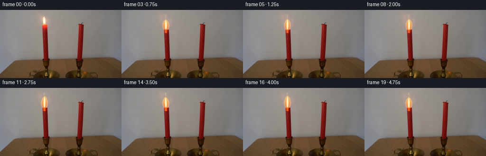
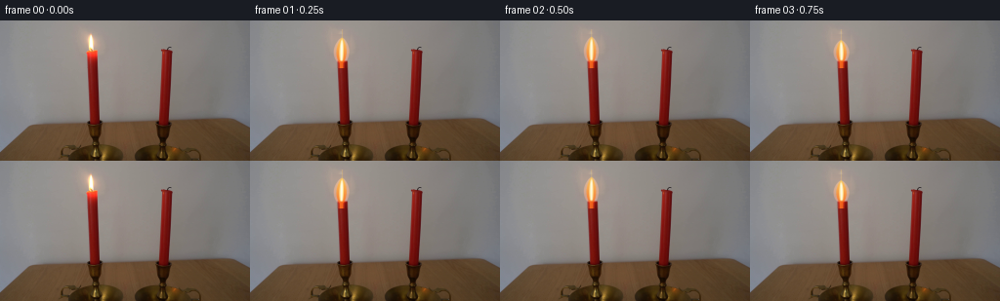
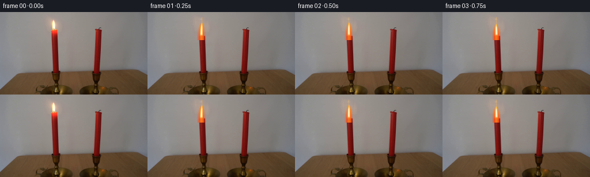
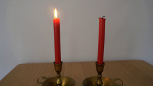
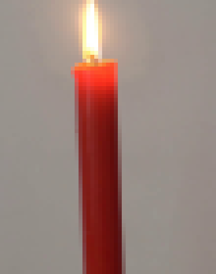
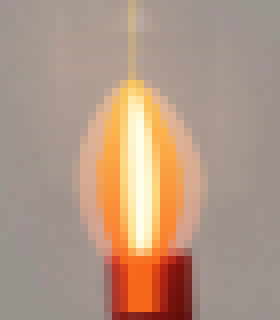
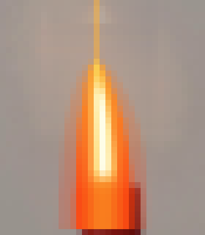
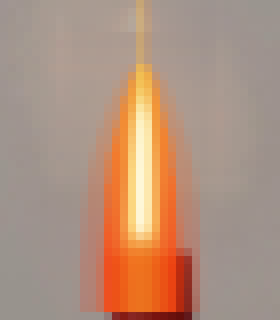
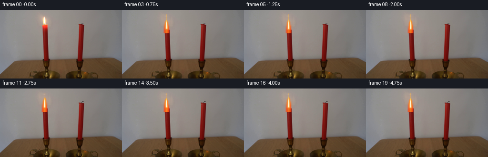

CODING AGENTS AS PIXEL WORLD MODELS
traex/DeepSeek-V4.1-Flash · 0092
点击播放 · 原生 RGB 像素
逐轮保存的候选
回放视频、检查图与代码变化。
每份候选均可单独播放。实际图片检查记录在下方工具轨迹中。
候选 01播放与检查图
点击播放 · 原生 RGB 像素


展开代码变化
--- 上一保存版本
+++ 本次保存版本
@@ -0,0 +1,217 @@
+from pathlib import Path
+
+import numpy as np
+from PIL import Image
+from scipy.ndimage import gaussian_filter
+
+import artifact_io
+
+
+WIDTH = 256
+HEIGHT = 144
+N_FRAMES = 20
+FPS = 4
+
+# The only animated object is the flame above the left candle.
+FLAME_CENTER_X = 93.6
+FLAME_BASE_Y = 43.0
+FLAME_TIP_Y = 18.2
+
+
+def clean_flame_plate(image):
+ """Remove the photographed flame while retaining the candle and room."""
+ plate = image.astype(np.float32).copy()
+ rng = np.random.default_rng(14)
+
+ # Interpolate the smooth wall behind the original flame. The small amount
+ # of copied row texture keeps the repaired patch from looking synthetic.
+ for y in range(10, 42):
+ left = np.median(plate[y, 80:85], axis=0)
+ right = np.median(plate[y, 103:108], axis=0)
+ span = 103 - 84
+ for x in range(84, 103):
+ mix = (x - 84) / span
+ plate[y, x] = left * (1.0 - mix) + right * mix
+
+ source_y = y - 4 if y >= 14 else y + 4
+ texture = plate[source_y, 84:103] - np.median(plate[source_y, 80:108], axis=0)
+ plate[y, 84:103] += texture * 0.16
+
+ # Feather the repaired rectangle into its surroundings.
+ yy, xx = np.mgrid[0:HEIGHT, 0:WIDTH]
+ feather = (
+ np.clip((xx - 82.0) / 3.0, 0.0, 1.0)
+ * np.clip((104.0 - xx) / 3.0, 0.0, 1.0)
+ * np.clip((yy - 9.0) / 2.0, 0.0, 1.0)
+ * np.clip((42.5 - yy) / 2.5, 0.0, 1.0)
+ )
+ repaired = plate.copy()
+ plate = image.astype(np.float32) * (1.0 - feather[..., None]) + repaired * feather[..., None]
+
+ # Keep the wax rim continuous where the flame formerly obscured it.
+ for x in range(88, 101):
+ top_y = 41 if 90 <= x <= 99 else 42
+ if plate[top_y, x].mean() < 95:
+ plate[top_y, x] = plate[min(43, top_y + 2), x]
+
+ # A tiny charred wick is visible inside the luminous base.
+ for y in range(40, 44):
+ strength = (44 - y) / 5.0
+ plate[y, 94] = plate[y, 94] * (1.0 - 0.35 * strength) + np.array([38, 25, 19]) * (0.35 * strength)
+
+ return np.clip(plate, 0, 255).astype(np.uint8)
+
+
+def make_texture(seed=19, shape=(90, 90)):
+ rng = np.random.default_rng(seed)
+ fine = gaussian_filter(rng.standard_normal(shape).astype(np.float32), 1.15)
+ broad = gaussian_filter(rng.standard_normal(shape).astype(np.float32), 3.8)
+ fine /= max(np.std(fine), 1e-5)
+ broad /= max(np.std(broad), 1e-5)
+ return 0.62 * fine + 0.38 * broad
+
+
+def render_flame(plate, frame_index, texture):
+ """Render a physically plausible, translucent candle flame."""
+ t = frame_index / FPS
+ out = plate.astype(np.float32).copy()
+
+ # Coordinates are supersampled before compositing to avoid a hard pixel
+ # edge at the small 256x144 target resolution.
+ x0, x1 = 78, 109
+ y0, y1 = 9, 49
+ scale = 6
+ hx = (x1 - x0) * scale
+ hy = (y1 - y0) * scale
+ xx = x0 + (np.arange(hx, dtype=np.float32) + 0.5) / scale
+ yy = y0 + (np.arange(hy, dtype=np.float32) + 0.5) / scale
+ X, Y = np.meshgrid(xx, yy)
+
+ phase = 2.0 * np.pi * t
+ sway = 0.78 * np.sin(phase * 0.73 + 0.45) + 0.25 * np.sin(phase * 1.51 + 1.2)
+ height = 24.5 + 1.8 * np.sin(phase * 0.83 - 0.2) + 0.65 * np.sin(phase * 1.94 + 2.1)
+ tip_y = FLAME_BASE_Y - height
+ base_y = FLAME_BASE_Y + 0.45 * np.sin(phase * 1.11)
+
+ q = np.clip((base_y - Y) / np.maximum(base_y - tip_y, 1.0), 0.0, 1.0)
+ center = (
+ FLAME_CENTER_X
+ + sway * np.power(q, 1.55)
+ + 0.22 * np.sin(phase * 0.91 + 2.3) * np.sin(np.pi * q)
+ )
+
+ width = (
+ 1.85 * np.power(np.clip(1.0 - q, 0.0, 1.0), 2.8)
+ + 5.1 * np.power(np.sin(np.pi * q), 0.72)
+ * (1.0 + 0.035 * np.sin(phase * 1.33 + 0.7))
+ )
+ width *= 1.0 - 0.10 * q
+ width = np.maximum(width, 0.06)
+
+ # Texture is sampled from a scrolling noise field to make the flame body
+ # breathe rather than merely move as a rigid teardrop.
+ texture_y = np.mod((Y - y0) * 3.1 - t * 9.0, texture.shape[0] - 1)
+ texture_x = np.mod((X - x0) * 3.1 + np.sin(phase * 0.5) * 4.0, texture.shape[1] - 1)
+ texture_sample = texture[texture_y.astype(np.int16), texture_x.astype(np.int16)]
+ edge_wobble = 1.0 + 0.050 * texture_sample * np.power(q, 0.8)
+
+ dx = np.abs(X - center)
+ softness = 0.32 + 0.30 * q
+ body = np.clip((width * edge_wobble - dx) / softness + 0.5, 0.0, 1.0)
+
+ # A faint outer envelope supplies the warm translucent edge seen around
+ # a real candle flame.
+ envelope = np.clip((width * 1.42 + 0.55 - dx) / 0.72 + 0.5, 0.0, 1.0)
+ envelope *= np.clip((1.02 - q) / 0.10, 0.0, 1.0)
+
+ core_width = np.maximum(width * (0.48 - 0.08 * q), 0.08)
+ core_dx = np.abs(X - (center + 0.10 * sway * np.power(q, 1.4)))
+ core = np.clip((core_width - core_dx) / 0.34 + 0.5, 0.0, 1.0)
+ core *= np.clip((q - 0.035) / 0.08, 0.0, 1.0) * np.clip((0.97 - q) / 0.11, 0.0, 1.0)
+
+ hot_width = np.maximum(width * (0.24 - 0.05 * q), 0.04)
+ hot = np.clip((hot_width - np.abs(X - center - 0.08)) / 0.28 + 0.5, 0.0, 1.0)
+ hot *= np.clip((q - 0.045) / 0.08, 0.0, 1.0) * np.clip((0.90 - q) / 0.13, 0.0, 1.0)
+
+ # Local glow reaches a few pixels beyond the flame and is modulated by the
+ # same low-frequency flicker as the visible body.
+ intensity = 0.91 + 0.065 * np.sin(phase * 1.17 + 0.8) + 0.025 * np.sin(phase * 2.37)
+ glow = np.exp(
+ -0.5 * ((X - center) / (5.4 + 0.45 * np.sin(phase * 0.71))) ** 2
+ -0.5 * ((Y - (FLAME_BASE_Y - 10.0)) / 13.5) ** 2
+ )
+ out_crop = np.asarray(
+ Image.fromarray(plate[y0:y1, x0:x1]).resize((hx, hy), Image.Resampling.BICUBIC),
+ dtype=np.float32,
+ )
+ out_crop += glow[..., None] * np.array([17.0, 7.0, 2.0], dtype=np.float32) * intensity
+
+ # Flame colors: red-orange near the base, amber in the body, and a
+ # yellow-white core around the upper half.
+ outer_color = (
+ np.array([252, 68, 18], dtype=np.float32) * (1.0 - q[..., None])
+ + np.array([255, 139, 32], dtype=np.float32) * q[..., None]
+ )
+ body_color = (
+ np.array([255, 111, 27], dtype=np.float32) * (1.0 - q[..., None])
+ + np.array([255, 205, 82], dtype=np.float32) * q[..., None]
+ )
+ core_color = (
+ np.array([255, 225, 112], dtype=np.float32) * (1.0 - q[..., None])
+ + np.array([255, 249, 205], dtype=np.float32) * q[..., None]
+ )
+ hot_color = np.array([255, 255, 237], dtype=np.float32)
+
+ # Additive outer envelope, then progressively hotter solid layers.
+ envelope_alpha = (envelope * 0.19 * intensity)[..., None]
+ out_crop += outer_color * envelope_alpha
+ body_alpha = (body * 0.88 * intensity)[..., None]
+ out_crop = out_crop * (1.0 - body_alpha) + body_color * body_alpha
+ core_alpha = (core * 0.86 * intensity)[..., None]
+ out_crop = out_crop * (1.0 - core_alpha) + core_color * core_alpha
+ hot_alpha = (hot * 0.96 * intensity)[..., None]
+ out_crop = out_crop * (1.0 - hot_alpha) + hot_color * hot_alpha
+
+ # Supersampled crop is box-filtered back to the output grid.
+ crop_rgb = np.clip(out_crop, 0, 255).astype(np.uint8)
+ crop_rgb = np.asarray(
+ Image.fromarray(crop_rgb).resize((x1 - x0, y1 - y0), Image.Resampling.BOX),
+ dtype=np.float32,
+ )
+
+ # Restrained warm light on the left candle and nearby holder. This is the
+ # only change outside the flame footprint and follows the same flicker.
+ region = out[y0:y1, x0:x1]
+ local_yy = np.arange(y0, y1, dtype=np.float32)[:, None]
+ light_falloff = np.exp(-np.maximum(local_yy - FLAME_BASE_Y, 0.0) / 44.0)
+ horizontal_falloff = np.exp(-0.5 * ((np.arange(x0, x1, dtype=np.float32)[None, :] - FLAME_CENTER_X) / 8.8) ** 2)
+ light_mask = light_falloff * horizontal_falloff
+ warm_gain = np.array([0.075, 0.038, 0.012], dtype=np.float32) * intensity
+ region += light_mask[..., None] * warm_gain
+
+ # Only the repaired/flame region changes; the right candle and table stay
+ # locked to the source plate.
+ out[y0:y1, x0:x1] = crop_rgb
+ out = np.clip(out, 0, 255).astype(np.uint8)
+
+ return out
+
+
+def generate(case_dir):
+ case_dir = Path(case_dir)
+ source = np.asarray(Image.open(case_dir / "first_frame.png").convert("RGB"), dtype=np.uint8)
+ assert source.shape == (HEIGHT, WIDTH, 3)
+
+ plate = clean_flame_plate(source)
+ texture = make_texture()
+ frames = np.empty((N_FRAMES, HEIGHT, WIDTH, 3), dtype=np.uint8)
+ frames[0] = source
+ for frame_index in range(1, N_FRAMES):
+ frames[frame_index] = render_flame(plate, frame_index, texture)
+
+ assert np.array_equal(frames[0], source)
+ artifact_io.save(frames, case_dir)
+
+
+if __name__ == "__main__":
+ generate(Path(__file__).resolve().parent)
候选 02播放与检查图
点击播放 · 原生 RGB 像素


展开代码变化
--- 上一保存版本
+++ 本次保存版本
@@ -88,8 +88,8 @@
X, Y = np.meshgrid(xx, yy)
phase = 2.0 * np.pi * t
- sway = 0.78 * np.sin(phase * 0.73 + 0.45) + 0.25 * np.sin(phase * 1.51 + 1.2)
- height = 24.5 + 1.8 * np.sin(phase * 0.83 - 0.2) + 0.65 * np.sin(phase * 1.94 + 2.1)
+ sway = 0.92 * np.sin(phase * 0.73 + 0.45) + 0.30 * np.sin(phase * 1.51 + 1.2)
+ height = 23.4 + 1.35 * np.sin(phase * 0.83 - 0.2) + 0.48 * np.sin(phase * 1.94 + 2.1)
tip_y = FLAME_BASE_Y - height
base_y = FLAME_BASE_Y + 0.45 * np.sin(phase * 1.11)
@@ -101,11 +101,11 @@
)
width = (
- 1.85 * np.power(np.clip(1.0 - q, 0.0, 1.0), 2.8)
- + 5.1 * np.power(np.sin(np.pi * q), 0.72)
- * (1.0 + 0.035 * np.sin(phase * 1.33 + 0.7))
- )
- width *= 1.0 - 0.10 * q
+ 0.25
+ + 4.55 * np.power(np.clip(1.0 - q, 0.0, 1.0), 0.55)
+ + 0.62 * np.power(np.sin(np.pi * q), 1.4)
+ )
+ width *= 1.0 + 0.035 * np.sin(phase * 1.33 + 0.7)
width = np.maximum(width, 0.06)
# Texture is sampled from a scrolling noise field to make the flame body
@@ -121,17 +121,17 @@
# A faint outer envelope supplies the warm translucent edge seen around
# a real candle flame.
- envelope = np.clip((width * 1.42 + 0.55 - dx) / 0.72 + 0.5, 0.0, 1.0)
+ envelope = np.clip((width * 1.40 + 0.70 - dx) / 0.82 + 0.5, 0.0, 1.0)
envelope *= np.clip((1.02 - q) / 0.10, 0.0, 1.0)
- core_width = np.maximum(width * (0.48 - 0.08 * q), 0.08)
+ core_width = np.maximum(width * (0.45 - 0.11 * q), 0.08)
core_dx = np.abs(X - (center + 0.10 * sway * np.power(q, 1.4)))
core = np.clip((core_width - core_dx) / 0.34 + 0.5, 0.0, 1.0)
- core *= np.clip((q - 0.035) / 0.08, 0.0, 1.0) * np.clip((0.97 - q) / 0.11, 0.0, 1.0)
-
- hot_width = np.maximum(width * (0.24 - 0.05 * q), 0.04)
+ core *= np.clip((q - 0.07) / 0.13, 0.0, 1.0) * np.clip((0.91 - q) / 0.16, 0.0, 1.0)
+
+ hot_width = np.maximum(width * (0.20 - 0.045 * q), 0.04)
hot = np.clip((hot_width - np.abs(X - center - 0.08)) / 0.28 + 0.5, 0.0, 1.0)
- hot *= np.clip((q - 0.045) / 0.08, 0.0, 1.0) * np.clip((0.90 - q) / 0.13, 0.0, 1.0)
+ hot *= np.clip((q - 0.10) / 0.10, 0.0, 1.0) * np.clip((0.84 - q) / 0.15, 0.0, 1.0)
# Local glow reaches a few pixels beyond the flame and is modulated by the
# same low-frequency flicker as the visible body.
@@ -149,23 +149,30 @@
# Flame colors: red-orange near the base, amber in the body, and a
# yellow-white core around the upper half.
outer_color = (
- np.array([252, 68, 18], dtype=np.float32) * (1.0 - q[..., None])
- + np.array([255, 139, 32], dtype=np.float32) * q[..., None]
- )
- body_color = (
- np.array([255, 111, 27], dtype=np.float32) * (1.0 - q[..., None])
- + np.array([255, 205, 82], dtype=np.float32) * q[..., None]
- )
+ np.array([250, 54, 15], dtype=np.float32) * (1.0 - q[..., None])
+ + np.array([255, 125, 25], dtype=np.float32) * q[..., None]
+ )
+ edge_color = (
+ np.array([255, 74, 18], dtype=np.float32) * (1.0 - q[..., None])
+ + np.array([255, 151, 33], dtype=np.float32) * q[..., None]
+ )
+ middle_color = (
+ np.array([255, 132, 31], dtype=np.float32) * (1.0 - q[..., None])
+ + np.array([255, 219, 85], dtype=np.float32) * q[..., None]
+ )
+ radial = np.clip(dx / np.maximum(width, 0.1), 0.0, 1.0)
+ middle_mix = np.clip((0.82 - radial) / 0.62, 0.0, 1.0)[..., None]
+ body_color = edge_color * (1.0 - middle_mix) + middle_color * middle_mix
core_color = (
- np.array([255, 225, 112], dtype=np.float32) * (1.0 - q[..., None])
- + np.array([255, 249, 205], dtype=np.float32) * q[..., None]
+ np.array([255, 226, 111], dtype=np.float32) * (1.0 - q[..., None])
+ + np.array([255, 249, 201], dtype=np.float32) * q[..., None]
)
hot_color = np.array([255, 255, 237], dtype=np.float32)
# Additive outer envelope, then progressively hotter solid layers.
- envelope_alpha = (envelope * 0.19 * intensity)[..., None]
- out_crop += outer_color * envelope_alpha
- body_alpha = (body * 0.88 * intensity)[..., None]
+ envelope_alpha = (envelope * 0.23 * intensity)[..., None]
+ out_crop = out_crop * (1.0 - envelope_alpha) + outer_color * envelope_alpha
+ body_alpha = (body * 0.94 * intensity)[..., None]
out_crop = out_crop * (1.0 - body_alpha) + body_color * body_alpha
core_alpha = (core * 0.86 * intensity)[..., None]
out_crop = out_crop * (1.0 - core_alpha) + core_color * core_alpha
可观测工具轨迹
实际执行的命令与返回图片。
命令 1exit 0
/bin/bash -c "pwd && rg --files -g '"'!*.pyc'"' -g '"'!__pycache__'"' | sed -n '1,200p'"
命令 2exit 0
/bin/bash -c "sed -n '1,240p' prompt.txt"
命令 3exit 0
/bin/bash -c "sed -n '1,300p' GENERATION_RULES.md"
命令 4exit 0
/bin/bash -c "find . -maxdepth 2 -type f -printf '%p\\n' | sort | sed -n '1,240p'"
命令 5exit 0
/bin/bash -c "sed -n '1,260p' artifact_io.py"
命令 6exit 0
/bin/bash -c "sed -n '1,300p' player_template.html"
命令 7exit 127
/bin/bash -c "file first_frame.png && python - <<'PY'
from PIL import Image
im=Image.open('first_frame.png')
print(im.size, im.mode)
PY"命令 8exit 0
/bin/bash -c "python - <<'PY'
from PIL import Image
im=Image.open('first_frame.png')
print(im.size, im.mode)
im.crop((70,15,125,85)).resize((440,560), Image.Resampling.NEAREST).save('.tmp/flame_crop.png')
im.crop((70,50,115,210)).resize((270,960), Image.Resampling.NEAREST).save('.tmp/candle_crop.png')
PY"命令 9exit 0
/bin/bash -c "python - <<'PY'
from PIL import Image
import numpy as np
im=np.asarray(Image.open('first_frame.png'))
for y in range(18,66,2):
vals=[]
for x in range(86,118):
r,g,b=im[y,x]
if int(r)-int(b)>12 or r>120:
vals.append((x,tuple(map(int,(r,g,b)))))
if vals: print(y, vals)
PY"命令 10exit 0
/bin/bash -c "python - <<'PY' mods=['numpy','PIL','scipy','cv2'] for m in mods: try: mod=__import__(m); print(m, getattr(mod,'__version__','ok')) except Exception as e: print(m,'MISSING',e) PY"
命令 11exit 1
/bin/bash -c 'python generate.py'
命令 12exit 0
/bin/bash -c 'python generate.py'
命令 13exit 0
/bin/bash -c "python - <<'PY'
from PIL import Image
for i in [1,4,7,10,13,16,19]:
im=Image.open(f'frames/{i:02d}.png')
im.crop((76,10,111,50)).resize((350,400), Image.Resampling.NEAREST).save(f'.tmp/f{i:02d}.png')
PY"命令 14exit 0
/bin/bash -c "python generate.py && python - <<'PY'
from PIL import Image
for i in [1,4,7,10,13,16,19]:
im=Image.open(f'frames/{i:02d}.png')
im.crop((76,10,111,50)).resize((350,400), Image.Resampling.NEAREST).save(f'.tmp/f{i:02d}.png')
PY"视觉工具实际返回图片 1

视觉工具实际返回图片 2

视觉工具实际返回图片 3
视觉工具实际返回图片 4

视觉工具实际返回图片 5

视觉工具实际返回图片 6

视觉工具实际返回图片 7
视觉工具实际返回图片 8

视觉工具实际返回图片 9

视觉工具实际返回图片 10

保存候选 2 份；完成命令 14 次；可验证图片返回 10 张。原始 API 响应与完整日志保留在本地。